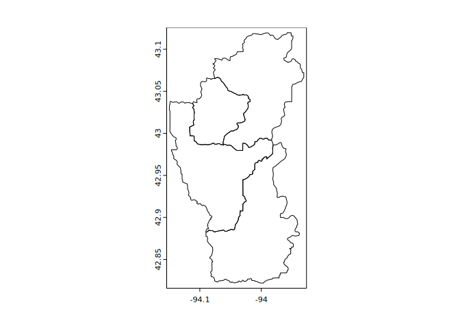
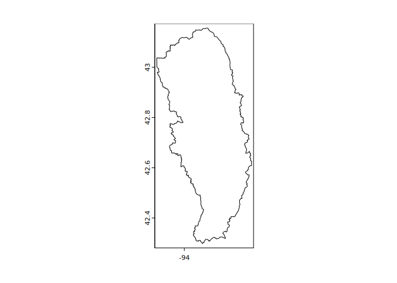
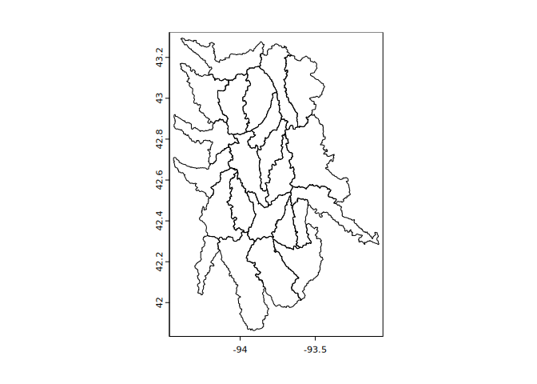
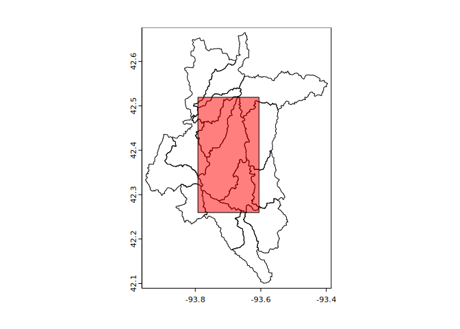

The goal of {huckster} is to provide tools for easily obtaining boundaries of hydrologic units and other information based on Hydrologic Unit Codes (‘HUC’).
Hydrologic unit data are retrieved from the U.S. Geological Survey ‘NationalMap’ REST API by default. This endpoint can be customized: <https://hydro.nationalmap.gov/arcgis/rest/services/wbd/MapServer/>.
Installation
You can install the development version of {huckster} from GitHub with:
# install.packages("remotes")
remotes::install_github("brownag/huckster")Examples
Here are some basic examples showing how to obtain hydrologic unit boundaries by ID (code), point, envelope, and polygon.
The default layerid=5 corresponds to a “10-digit” HUC or “watershed” level boundary. See huc_code() for a system for encoding layerid from labels, code lengths or codes.
library(huckster)
library(terra)
#> terra 1.7.29
## HUC code input
ids <- c("071000050101", "071000050102",
"071000050103", "071000050104")
w <- id_to_huc(ids, layer = "subwatershed")
plot(w)
## point input
x <- point_to_huc(-94.0671, 43.026, layer = "subbasin")
plot(x)
## SpatExtent bounding box/envelope input
y <- envelope_to_huc(terra::ext(x))
## equivalently using numeric bounds:
# y <- envelope_to_huc(-94.150, 42.298, -93.636, 43.156)
plot(y)
## SpatVector polygon ('Ditch Number 71' rect extent) as input
p <- terra::as.polygons(y[1, ], ext = TRUE)
z <- polygon_to_huc(p, layer = "subwatershed")
plot(z)
plot(p, col = rgb(1, 0, 0, 0.5), add = TRUE)